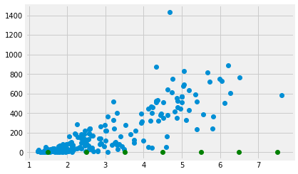
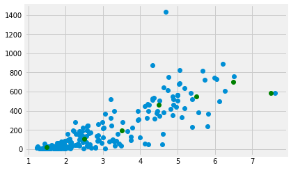
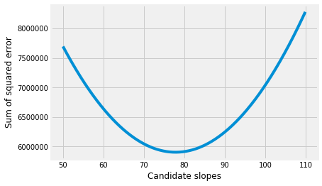

8.3 Mean and slopes
In The Mean as Predictor, we found that the mean had some good properties as a single best predictor for a whole distribution.
- The mean gives a total prediction error of zero. Put otherwise, on average, your prediction error is zero.
- The mean gives the lowest squared error. Put otherwise, the mean gives the lowest average squared difference from the observed value.
Now we can consider what predictor we should use when predicting one set of values, from a different set of values.
We load our usual libraries.
import numpy as np
import matplotlib.pyplot as plt
%matplotlib inline
# Make plots look a little bit more fancy
plt.style.use('fivethirtyeight')
# Print to 2 decimal places, show tiny values as 0
np.set_printoptions(precision=2, suppress=True)
import pandas as pd
Again, we use the gender data that we first saw in the data frame introduction.
# Load the data file
gender_data = pd.read_csv('gender_stats.csv')
We have already seen the data for the Maternal Mortality Ratio
mat_mort_ratio. Now we will look to see whether we can predict the Maternal Mortality Ratio (MMR) with the Fertility Rate. The Fertility Rate (FR) is the total number of births per woman. We predict that countries with many births per woman will also tend to have high Maternal Mortality Ratios. Fertility Rate is fert_rate in the gender_data data frame.
# Show the column names
gender_data.columns
Index(['country', 'fert_rate', 'gdp', 'health_exp_per_cap', 'health_exp_pub',
'prim_ed_girls', 'mat_mort_ratio', 'population'],
dtype='object')
To start, we make a new data frame that contains only the columns corresponding to MMR and FR. To get two columns out of a data frame, we pass a list of column names inside square brackets:
# Make new data frame with only MMR and FR
just_mmr_fr = gender_data[['mat_mort_ratio', 'fert_rate']]
To save space, we only show the first five rows of the data frame, using the head method of the data frame.
# Show the first five rows
just_mmr_fr.head()
| mat_mort_ratio | fert_rate | |
|---|---|---|
| 0 | 444.00 | 4.95450 |
| 1 | 29.25 | 1.76925 |
| 2 | 142.50 | 2.86600 |
| 3 | NaN | NaN |
| 4 | NaN | NaN |
Looking at these values, we see that there are missing values: NaN. These will make our life harder. For now, we drop all rows that have any missing values, using the dropna method of the data frame.
# Drop all rows with any NaN values
clean_mmr_fr = just_mmr_fr.dropna()
clean_mmr_fr.head()
| mat_mort_ratio | fert_rate | |
|---|---|---|
| 0 | 444.00 | 4.954500 |
| 1 | 29.25 | 1.769250 |
| 2 | 142.50 | 2.866000 |
| 5 | 501.25 | 6.123000 |
| 7 | 161.00 | 3.397587 |
We fetch out the columns of MMR and FR data. These are each Pandas Series:
mmr_series = clean_mmr_fr['mat_mort_ratio']
fert_series = clean_mmr_fr['fert_rate']
type(fert_series)
pandas.core.series.Series
The last step in our data munging is to convert the columns of MMR and FR data into arrays, to make them simpler to work with. We do this with the Numpy array function, that makes arrays from many other types of object.
mmr = np.array(mmr_series)
fert = np.array(fert_series)
Looking for straight lines
Now we are ready to look for a relationship between MMR and FR.
As usual, we start with a plot. This time, for fun, we add a label to the X and Y axes with xlabel and ylabel.
# Plot FR on the x axis, MMR on the y axis
plt.plot(fert, mmr, 'o')
plt.xlabel('Fertility rate')
plt.ylabel('Maternal mortality ratio')
Text(0, 0.5, 'Maternal mortality ratio')

The 'o' argument to the plot function above is a “plot marker”. It tells Matplotlib to plot the points as points, rather than joining them with lines. The markers for the points will be filled circles, with 'o', but we can also ask for other symbols such as plus marks (with '+') and crosses (with 'x').
Putting points on plots
Before we go on, we will need some machinery to plot arbitrary points on plots.
In fact this works in exactly the same way as the points you have already seen on plots. We use the plot function, with a suitable plot marker. The x coordinates of the points go in the first argument, and the y coordinates go in the second.
To plot a single point, pass a single x and y coordinate value:
plt.plot(fert, mmr, 'o')
# A green point at x=2, y=1000
plt.plot(2, 1000, 'o', color='green')
[<matplotlib.lines.Line2D at 0x10ff53d68>]

To plot more than one point, pass multiple x and y coordinate values:
plt.plot(fert, mmr, 'o')
# Two green points, one at [2, 1000], the other at [3, 1200]
plt.plot([2, 3], [1000, 1200], 'o', color='green')
[<matplotlib.lines.Line2D at 0x1120fd438>]

The mean as applied to plots
We want a straight line that fits these points.
The straight line should do the best job it can in predicting the MMR values from the FP values.
We found that the mean was a good predictor. We could try and find a line or something similar that went through the mean of the MMR values, at any given FR value.
Let’s split the FR values up into bins centered on 1.5, 2.5 and so on. Then we take the mean of all the MMR values corresponding to FR values between 1 and 2, 2 and 3 and so on.
# The centers for our FR bins
fert_bin_centers = np.arange(7) + 1.5
fert_bin_centers
array([1.5, 2.5, 3.5, 4.5, 5.5, 6.5, 7.5])
# The number of bins
n_bins = len(fert_bin_centers)
n_bins
7
Show the center of the bins on the x axis of the plot.
plt.plot(fert, mmr, 'o')
plt.plot(fert_bin_centers, np.zeros(n_bins), 'o', color='green')
[<matplotlib.lines.Line2D at 0x11215de80>]

Take the mean of the MMR values for each bin.
mmr_means = np.zeros(n_bins)
for i in np.arange(n_bins):
mid = fert_bin_centers[i]
# Boolean identifing indices withing the FR bin
fr_within_bin = (fert >= mid - 0.5) & (fert < mid + 0.5)
# Take the mean of the corresponding MMR values
mmr_means[i] = np.mean(mmr[fr_within_bin])
mmr_means
array([ 21.84, 106.97, 194.23, 461.48, 548.55, 698.35, 585.5 ])
These means should be good predictors for MMR values, given an FR value. We check the bin of the FR value and take the corresponding MMR mean as the prediction.
Here is a plot of the means of MMR for every bin:
plt.plot(fert, mmr, 'o')
plt.plot(fert_bin_centers, mmr_means, 'o', color='green')
[<matplotlib.lines.Line2D at 0x112230908>]

Finding a predicting line
The means per bin give some prediction of the MMR values from the FR. Can we do better? Can we find a line that predicts the MMR data from the FR data?
Remember, any line can be fully described by an intercept and a slope. A line predicts the $y$ values from the $x$ values, using the slope $s$ and the intercept $I$:
The intercept is the value of the line when x is equal to 0. It is therefore where the line crosses the y axis.
In our case, let us assume the intercept is 0. We will assume MMR of 0 if there are no births. We will see that things are more complicated than that, but we will start there.
Now we want to find a good slope. The slope is the amount that the y values increase for a one unit increase in the x values. In our case, it is the increase in the MMR for a 1 child increase in the FR.
Let’s guess the slope is 100.
slope = 100
Remember our line prediction for y (MMR) is:
where x is the FR. In our case we assume the intercept is 0, so:
mmr_predicted = fert * slope
Plot the predictions in red on the original data in blue.
plt.plot(fert, mmr, 'o')
plt.plot(fert, mmr_predicted, 'o', color='red')
[<matplotlib.lines.Line2D at 0x112303cf8>]

The red are the predictions, the blue are the original data. At each MMR value we have a prediction, and therefore, an error in our prediction; the difference between the predicted value and the actual values.
error = mmr - mmr_predicted
error[:10]
array([ -51.45, -147.68, -144.1 , -111.05, -178.76, -179.05, -127.3 ,
-180.15, -141.5 , -172.75])
In this plot, for each point, we draw a thin dotted line between the prediction of MMR for each point, and its actual value.
plt.plot(fert, mmr, 'o')
plt.plot(fert, mmr_predicted, 'o', color='red')
# Draw a line between predicted and actual
for i in np.arange(len(fert)):
x = fert[i]
y_0 = mmr_predicted[i]
y_1 = mmr[i]
plt.plot([x, x], [y_0, y_1], ':', color='black', linewidth=1)

What is a good line?
We have guessed a slope, and so defined a line. We calculated the errors from our guessed line.
How would we decide whether our slope was a good one? Put otherwise, how would we decide when we have a good line?
A good line should have small prediction errors. That is, the line should give a good prediction of the points. That is, the line should result in small errors.
We would like a slope that gives us the smallest error.
One metric for the line
The Mean as Predictor section showed that the mean is the value with the smallest squared distance from the other values in the distribution. The mean is the predictor value that minimizes the sum of squared distances from the other values.
We can use the same metric for our line. Instead of using a single vector as a predictor, now we are using the values on the line as predictors. We want the FR slope, in our case, that gives the best predictors of the MMR values. Specifically, we want the slope that gives the smallest sum of squares difference between the line prediction and the actual values.
We have already calculated the prediction and error for our slope of 100, but let’s do it again, and then calculate the sum of squares of the error:
slope = 100
mmr_predicted = fert * slope
error = mmr - mmr_predicted
# The sum of squared error
sum(error ** 2)
7038632.756108372
We are about to do this calculation many times, for many different slopes. We need a function.
In the function below, we are using function world
to get the values of fert and mmr defined here at the top level,
outside function world. The function can see these values, from
function world.
def sos_error(slope):
fitted = fert * slope # 'fert' comes from the top level
error = mmr - fitted # 'mmr' comes from the top level
return np.sum(error ** 2)
First check we get the same answer as the calculation above:
sos_error(100)
7038632.75610837
Does 200 give a higher or lower sum of squared error?
sos_error(200)
40456091.81253432
Now we can use the same strategy as we used in the mean meaning page, to try lots of slopes, and find the one that gives the smallest sum of squared error.
# Slopes to try
some_slopes = np.arange(50, 110, 0.1)
n_slopes = len(some_slopes)
# Try all these slopes, calculate and record sum of squared error
sos_errors = np.zeros(n_slopes)
for i in np.arange(n_slopes):
slope = some_slopes[i]
sos_errors[i] = sos_error(slope)
# Show the first 10 values
sos_errors[:10]
array([7695798.57, 7682930.13, 7670107.99, 7657332.17, 7644602.66,
7631919.45, 7619282.56, 7606691.97, 7594147.7 , 7581649.73])
We plot the slopes we have tried, on the x axis, against the sum of squared error, on the y-axis.
plt.plot(some_slopes, sos_errors)
plt.xlabel('Candidate slopes')
plt.ylabel('Sum of squared error')
Text(0, 0.5, 'Sum of squared error')

The minimum of the sum of squared error is:
np.min(sos_errors)
5901409.5805078605
We want to find the slope that corresponds to this minimum. We can use argmin.
# Index of minumum value
i_of_min = np.argmin(sos_errors)
i_of_min
278
This is the index position of the minimum. We will therefore get the minimum (again) if we index into the original array with the index we just found:
# Check we do in fact get the minimum at this index
sos_errors[i_of_min]
5901409.5805078605
Now we can get and show the slope value that corresponds the minimum sum of squared error:
best_slope = some_slopes[i_of_min]
best_slope
77.8000000000004
Plot the data, predictions and errors for the line that minimizes the sum of squared error:
best_predicted = fert * best_slope
plt.plot(fert, mmr, 'o')
plt.plot(fert, best_predicted, 'o', color='red')
for i in np.arange(len(fert)):
x = fert[i]
y_0 = best_predicted[i]
y_1 = mmr[i]
plt.plot([x, x], [y_0, y_1], ':', color='black', linewidth=1)
plt.title('The best-fit line using least-squared error')
Text(0.5, 1.0, 'The best-fit line using least-squared error')

The algorithm we have used so far, is rather slow and clunky, because we had to make an array with lots of slopes to try, and then go through each one to find the slope that minimizes the squared error.
In fact, we will soon see, we can use some tricks to get Python to do all this work for us, much more quickly.
Finding techniques for doing this automatically is a whole mathematical field, called optimization.
For now, let’s leap to using these techniques on our problem, of finding the best slope:
from scipy.optimize import minimize
# 100 below is the slope value to start the search.
minimize(sos_error, 100)
fun: 5901406.206272444
hess_inv: array([[0.]])
jac: array([0.])
message: 'Optimization terminated successfully.'
nfev: 15
nit: 3
njev: 5
status: 0
success: True
x: array([77.84])